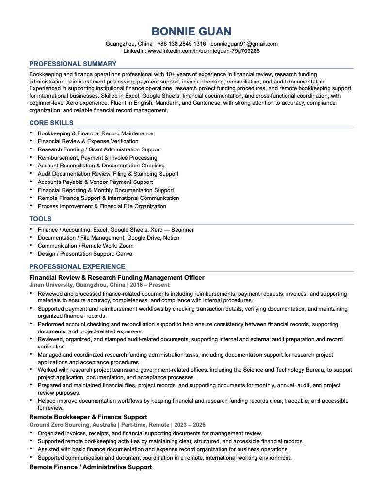

Bookkeeping Support
Invoice preparation, receipt organization, expense tracking, financial recordkeeping, and document checks for management review.
Remote-first | Guangzhou, China | English-speaking teams
I help remote teams keep invoices, receipts, reimbursements, budgets, and finance documents organized, accurate, and easy to review.
About
I am a detail-oriented finance and administrative support professional with hands-on experience in bookkeeping support, invoice preparation, reimbursement review, budget tracking, bank reconciliation support, and finance documentation.
My background combines public-sector finance review at Jinan University with remote support for Australia-based sourcing work and an international robotics company founded by Australian and Ukrainian founders.
What I Support
Invoice preparation, receipt organization, expense tracking, financial recordkeeping, and document checks for management review.
Reimbursement review, contract and invoice verification, procurement expense support, payment request review, and approval follow-up.
English communication, workflow follow-up, schedule and travel coordination, data organization, and practical admin support for distributed teams.
Tools
Experience
Support an international robotics company with Xero invoice preparation, invoice template customization, expense tracking, bank reconciliation support, and English workflow coordination via WhatsApp.
Provided remote finance support for Australia-based sourcing work, including invoice and receipt organization, budget tracking, basic reporting, financial record visibility, and related administrative coordination.
Review research funding budgets, reimbursements, payment requests, procurement expenses, asset reimbursement records, contracts, and invoices for accuracy, completeness, and internal policy compliance.
Selected Proof
Reviewed approximately RMB 500,000 in reimbursement materials involving more than 100 international travel receipts, identified documentation issues, coordinated corrections, and helped reduce the timeline by about two months compared with the previous year.
Prepared invoices, customized Xero invoice templates, organized invoice-related records, and followed up on finance documentation details with an international team in English.
Organized invoices, receipts, supporting documents, budget records, and basic reports to improve management review, record accuracy, and visibility in a remote work environment.
Resume
This resume version is tailored for remote bookkeeping, accounting support, invoicing, reconciliation support, expense tracking, and finance documentation roles.
Download PDF
Education
Master of Business Administration, 2015
Bachelor's Degree in Finance, 2013
Certifications & Languages
Intermediate Accountant Certificate, China · IELTS 6.0 · CET-6 · Cantonese native · Mandarin native · English professional working proficiency
Contact